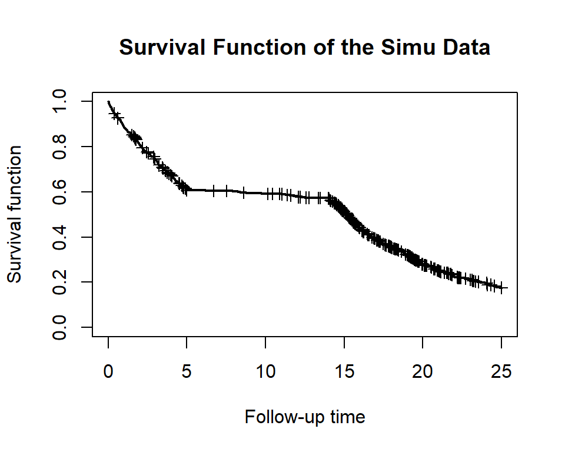
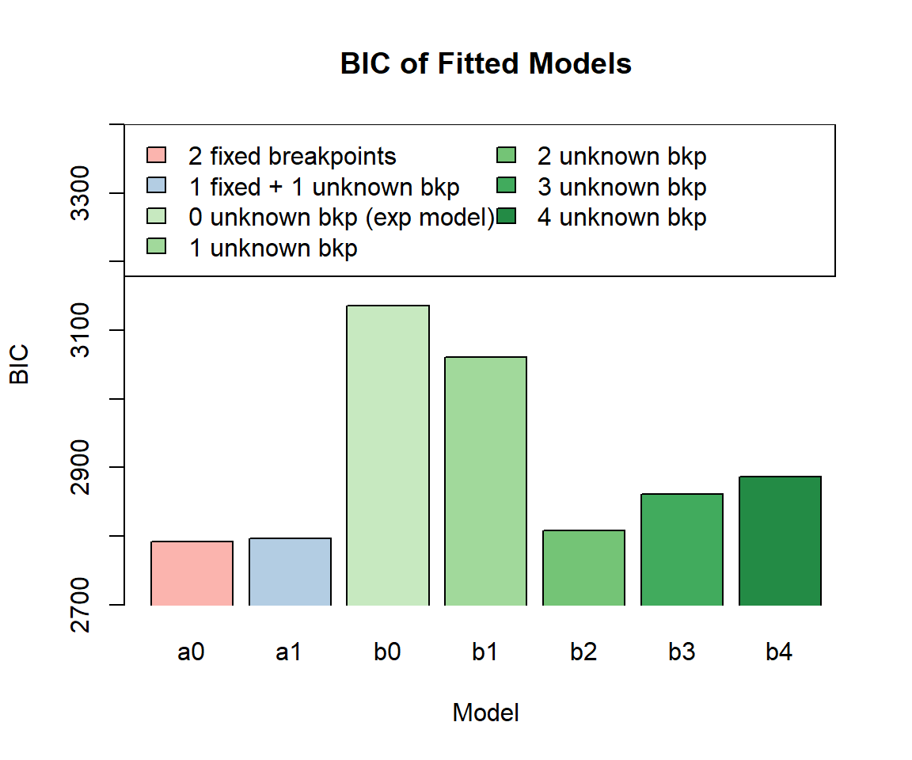
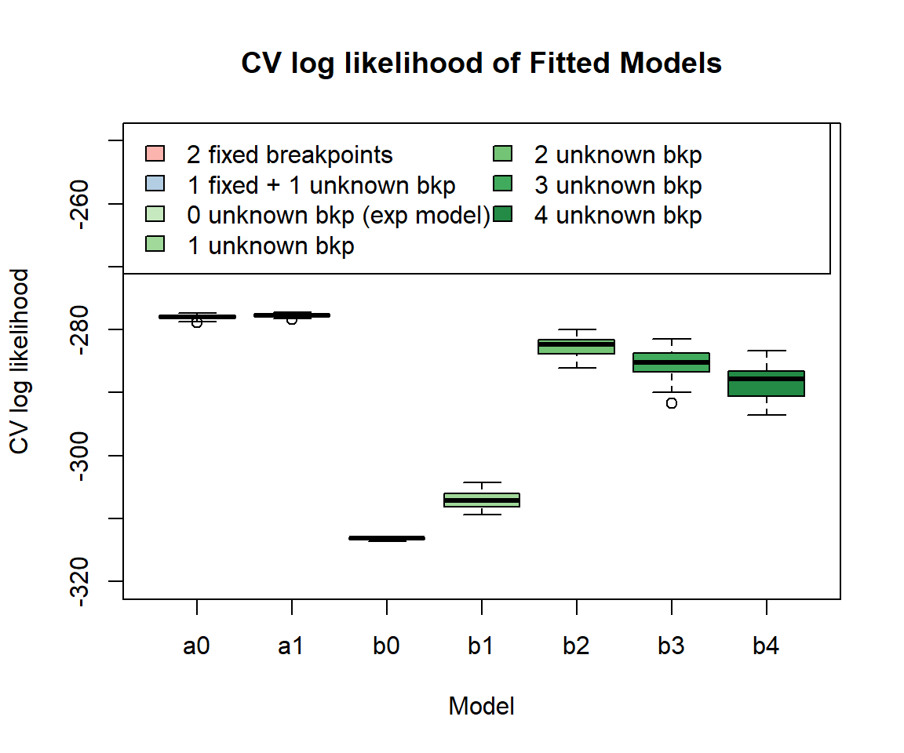
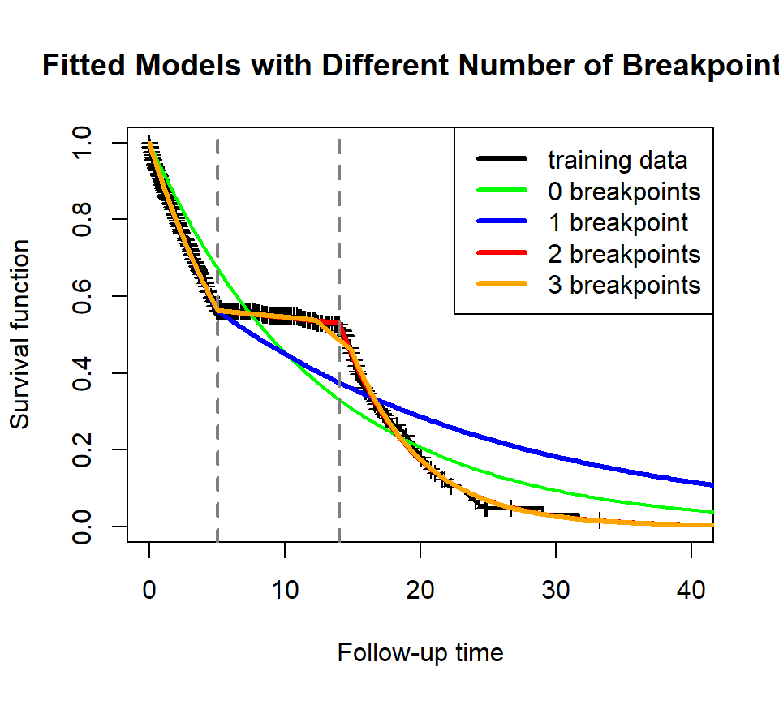
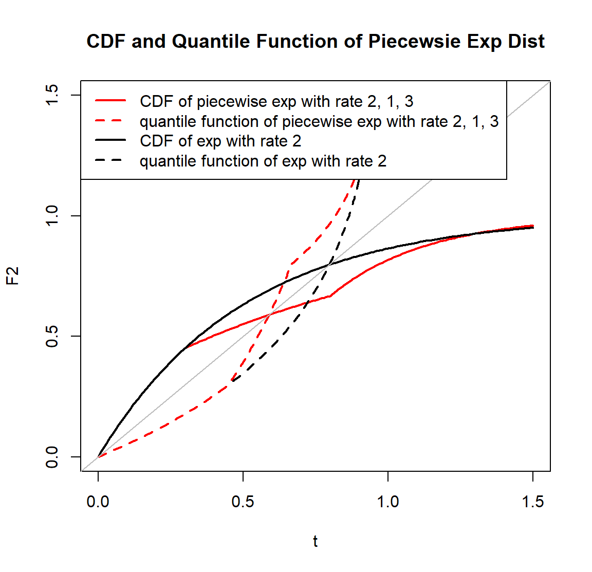
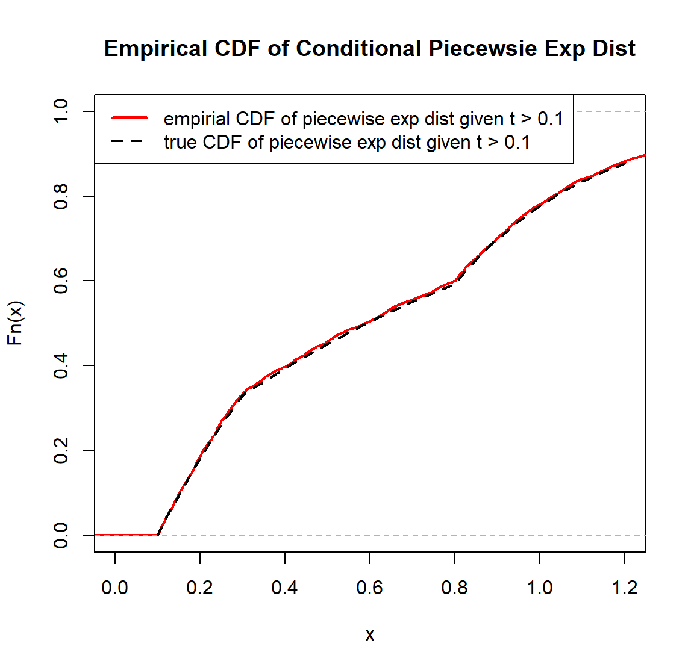
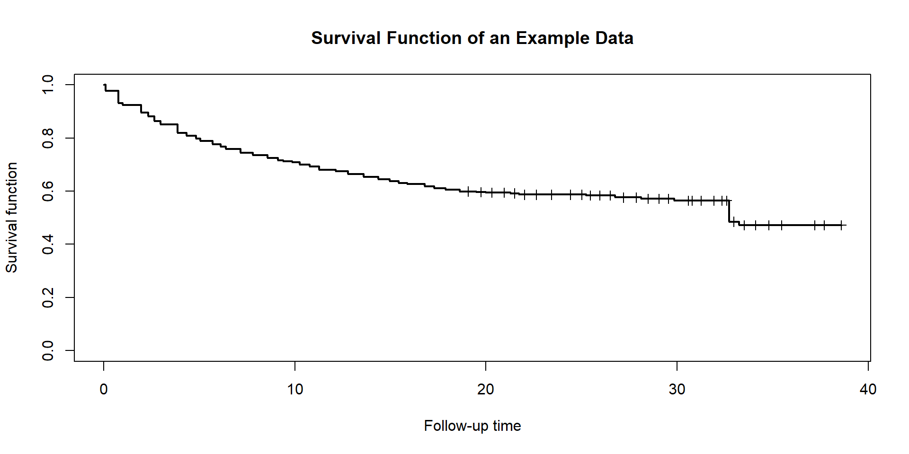

Piecewise Exponential Prediction Model
Structure of Package ‘PWEXP’

The `PWEXP’package provides a complete set of tools to work with survival data with piecewise exponential distribution. It also makes event prediction based on the fitted model. Specifically, it has five components for different tasks:
- Simulate Data: (you can skip this part if you work
with an existing dataset)
- the
simdata()function generates synthetic survival dataset with- randomization time defined by randomization rate (number of subjects per month) or randomization curve (number of subjects in each month)
- multiple treatment groups with stratification by user-defined allocation ratio
- primary endpoint (event), drop-out (censor) and death with exponential distribution or user-defined distributions (e.g., piecewise exponential, mixture distribution, etc.) for each stratification in each group
- the
plot_survival()function plots KM estimator for the right censored data - the
plot_event()function plots the number of cumulative events - auxiliary functions
dpwexp,ppwexp,qpwexp,rpwexpare the PDF, CDF, quantile function, generator function for piecewise exponential distribution (See ‘Piecewise Exponential Distribution’ Section for more details)
- the
- Split Data:
- the
cut_dat()function cuts the data by a specified time point. Only subjects who are randomized before the specified time will be kept. It also recensors the data at the specified time. It is useful to create a training set.
- the
- Fit a Piecewise Exponential Model:
- the
pwexp.fit()function fits the piecewise exponential model to right censored data- with pre-specified breakpoints
- or with partially pre-specified breakpoints
- or with unknown breakpoints (to be fitted from the data)
- the
pwexp.fit()function obtains model AIC, BIC - the
cv.pwexp.fit()conducts model cross validation and obtains the CV log likelihood - the
plot_survival()plots fitted survival curve for objectpwexp.fit
- the
- Bootstrap the Model to Get CI (optional):
- the
boot.pwexp.fit()conducts bootstrapping for an existing model - the
plot_survival()plots fitted survival curve and its CI for objectboot.pwexp.fit
- the
- Prediction Events and Timeline
- the
predict()function takes event model and drop-out (censor) model (optional) to make event prediction and timeline prediction - the
predict()function provides the CI of predicted number of events or timeline (for bootstrapping model) - the
plot_event()plots predicted number of events (for objectpredict.pwexp.fit) and its CI (if applicable, for objectpredict.boot.pwexp.fit()) - auxiliary functions
ppwexp_conditional(),qpwexp_conditional(),rpwexp_conditional()are the CDF, quantile function, generator function for conditional piecewise exponential distribution (See ‘Conditional Piecewise Exponential Distribution’ Section for more details)
- the
0. Install Package ‘PWEXP’
You need to install package fastmatch before installing PWEXP.
install.packages('fastmatch')
library('fastmatch')
library('PWEXP')
# or install package from Github
install.packages("devtools")
library(devtools)
install_github("zjph602xtc/PWEXP")1. Simulate Data
1.1 Basic Usage of simdata()
You can skip this part if you work with an existing dataset. Here we
use simdata() function to generate a simple example
dataset:
- two groups with sample size ratio 1:2 (treatment vs. control);
- randomization curve is defined as 10 pt/month in the first 2 months and 5 pt/month in the following 20 months;
- the primary endpoint (event) follows an exponential distribution with hazard rate 0.01, 0.05 for treatment and control group;
- the drop-out follows an exponential distribution with drop-out probability 3%/month (equivalently, drop-out hazard rate is -log(1-0.03)=0.0304) for both groups;
- the death event follows an exponential distribution with hazard rate 0, 0.005 for each group;
- argument
add_columnrequest some extra variables.
demo_dat0 <- simdata(group = c('trt','control'), n_rand = c(10,10,rep(5,20)),
allocation = c(1,2), event_lambda = c(0.01, 0.05),
drop_rate = 0.03, death_lambda = c(0, 0.005),
add_column = c('eventT_abs','dropT_abs','deathT_abs','followT','followT_abs','censor','event','censor_reason'))
head(demo_dat0)## ID group randT eventT dropT deathT eventT_abs dropT_abs deathT_abs
## 1 1 trt 0.6225994 80.20827 37.49508 Inf 80.83087 38.11768 Inf
## 2 2 trt 8.9574934 12.73224 34.16406 Inf 21.68974 43.12155 Inf
## 3 3 trt 19.7647359 41.60280 17.98190 Inf 61.36754 37.74663 Inf
## 4 4 trt 1.9460523 254.63692 46.49410 Inf 256.58297 48.44016 Inf
## 5 5 trt 17.5764884 215.03632 33.89415 Inf 232.61281 51.47063 Inf
## 6 6 trt 5.5198916 39.81326 16.37645 Inf 45.33315 21.89634 Inf
## followT followT_abs censor event censor_reason
## 1 37.49508 38.11768 1 0 drop_out
## 2 12.73224 21.68974 0 1 <NA>
## 3 17.98190 37.74663 1 0 drop_out
## 4 46.49410 48.44016 1 0 drop_out
## 5 33.89415 51.47063 1 0 drop_out
## 6 16.37645 21.89634 1 0 drop_outIn the generated dataset:
randTis the randomization timeeventT,dropT,deathTare the underlying primary event, drop-out, death timefollowTis the follow-up time, which is the minimum value ofeventT,dropT,deathTeventT_abs,dropT_abs,deathT_abs,followT_absare the corresponding time from the beginning of the trialcenosr,eventindicate whether the primary event happened at the end of follow-up; if a subject is censored,censor_reasonshows the type of censoring (i.e., ‘drop_out’,‘death’ or ‘never_event’(when followT=inf)))
The diagram below shows the relationship between these variables:

1.2 Generate Data with User-defined Distributions
In the follow parts of the demonstration, we will use a single group with piecewise exponential distribution endpoint:
# define the piecewiese exponential event generation function
myevent_dist <- function(n)rpwexp(n, rate=c(0.1, 0.01, 0.2), breakpoint=c(5,14))
# you can use any generation function in simdata function, for example, use a weibull density:
# myevent_dist <- function(n)rweibull(n, shape=0.5, scale=10)
# use advanced_dist to adopt user-defined distribution, see function help for more details
dat <- simdata(rand_rate = 20, total_sample = 1000, drop_rate = 0.03,
advanced_dist = list(event_dist=myevent_dist),
add_column = c('censor_reason','event','followT','followT_abs'))We can use the plot_survival() function to plot the
survival curve and cumulative number of events:
plot_survival(dat$eventT, dat$event, conf.int = F, mark.time = T, xlim = c(0, 25), main='Survival Function of the Simu Data')
plot_event(dat$eventT, abs_time = F, dat$event, xlim = c(0, 25), main='Number of Cumulative Events of the Simu Data')
2. Split Data to Obtain Training/Interim Data
We cut the dataset by the time when 80% percent subject are randomized. Only subjects who are randomized before the specified time will be kept in the returned data. The returned data will be recensored at the specified time. This step is to create a training set. In real data analysis, this step may not be needed.
cut <- quantile(dat$randT, 0.8)
train <- cut_dat(cut = cut, data = dat, var_randT = 'randT',
var_followT = 'followT', var_followT_abs = 'followT_abs',
var_event = 'event', var_censor_reason = 'censor_reason')3. Fit a Piecewise Exponential Model
We will fit several piecewise exponential models on the training set:
fit_a0has pre-specified breakpoints at time = 5, 14fit_a1has one pre-specified breakpoint at time = 14, and the total number of breakpoint is 2. The other breakpoint will be estimated from the datafit_b0tofit_b4have 0 to 4 unknown breakpoints. Note thefit_b0model is actually an exponential model since there is NO breakpoints.
fit_a0 <- pwexp.fit(train$followT, train$event, breakpoint = c(5,14))
fit_a1 <- pwexp.fit(train$followT, train$event, nbreak = 2, breakpoint = c(14))
# argument 'exclude_int' defines an interval that excludes any estimated breakpoints. for example:
# fit_a1 <- pwexp.fit(train$followT, train$event, nbreak = 2, breakpoint = c(5), exclude_int=c(8,Inf))
fit_b0 <- pwexp.fit(train$followT, train$event, nbreak = 0)
fit_b1 <- pwexp.fit(train$followT, train$event, nbreak = 1)
fit_b2 <- pwexp.fit(train$followT, train$event, nbreak = 2)
fit_b3 <- pwexp.fit(train$followT, train$event, nbreak = 3)
fit_b4 <- pwexp.fit(train$followT, train$event, nbreak = 4)We plot BIC of these models and find that among all models without
pre-specified breakpoints, fit_b2 with the correct number
of breakpoints has the lowest BIC value. We can also use cross
validation to help us choose the model. The model fit_b2
with the correct number of breakpoints has the highest CV log
likelihood.
library('RColorBrewer')
model_name <- c('2 fixed breakpoints', '1 fixed + 1 unknown bkp', '0 unknown bkp (exp model)', '1 unknown bkp', '2 unknown bkp', '3 unknown bkp', '4 unknown bkp')
model_ind <- c('a0','a1',paste0('b',0:4))
col <- c(brewer.pal(3, 'Pastel1')[1:2], brewer.pal(9, 'Greens')[3:7])
# Plot BIC for each model
barplot(c(fit_a0$BIC, fit_a1$BIC, fit_b0$BIC, fit_b1$BIC, fit_b2$BIC, fit_b3$BIC, fit_b4$BIC), xlab='Model', ylab='BIC', ylim=c(2700,3400), xpd=F, col=col, names.arg=model_ind, main='BIC of Fitted Models')
legend('topleft', model_name, fill=col, ncol=2, text.width=3.5)
# Cross validate fitted models
nsim <- 50
fit_a0_cv <- cv.pwexp.fit(fit_a0, nsim = nsim)
fit_a1_cv <- cv.pwexp.fit(fit_a1, nsim = nsim)
fit_b0_cv <- cv.pwexp.fit(fit_b0, nsim = nsim)
fit_b1_cv <- cv.pwexp.fit(fit_b1, nsim = nsim)
fit_b2_cv <- cv.pwexp.fit(fit_b2, nsim = nsim)
fit_b3_cv <- cv.pwexp.fit(fit_b3, nsim = nsim)
# alternatively, we can specify a new model in the cv.pwexp.fit function instead of CV a fitted model, for example:
fit_b4_cv <- cv.pwexp.fit(train$followT, train$event, nbreak=4, nsim=nsim)
boxplot(cv~model_ind, data.frame(cv=c(fit_a0_cv, fit_a1_cv, fit_b0_cv, fit_b1_cv, fit_b2_cv, fit_b3_cv, fit_b4_cv), model_ind=rep(model_ind, each=nsim)), ylab='CV log likelihood', xlab='Model', ylim=c(-320,-250), col=col, main='CV log likelihood of Fitted Models')
legend('topleft', model_name, fill=col, ncol=2, text.width=3)
We then plot the fitted curves of some of these models.
# Plot fitted survival curves
plot_survival(train$followT, train$event, xlim=c(0,40), main='Fitted Models with Different \nNumber of Breakpoints')
plot_survival(fit_b0, col='green', lwd=2)
plot_survival(fit_b1, col='blue', lwd=3, show_breakpoint = F)
plot_survival(fit_b2, col='red', lwd=3, breakpoint_par = list(col='grey50', lty=2))
plot_survival(fit_b3, col='orange', lwd=3, show_breakpoint = F)
legend('topright',c('training data', '0 breakpoints','1 breakpoint','2 breakpoints','3 breakpoints'), lwd=3, col=c('black', 'green','blue','red','orange'))
4. Bootstrap Model (optional)
We will use bootstrap to estimate the uncertainty of estimated
parameters. We take model fit_b2 as an example.
# bootstrap the model
fit_b2_boot <- boot.pwexp.fit(fit_b2, nsim = 50)
# plot data and the fitted model with 95% CI
plot_survival(train$followT, train$event, xlim=c(0,40), main='Fitted Model for Primary Events with 95% CI')
plot_survival(fit_b2_boot, col='red', alpha=0.05, CI_par = list(col='#ff9896'))
# plot 95% CI of estimated breakpoints
brk_ci <- apply(attr(fit_b2_boot, 'brk'), 2, function(x)quantile(x,c(0.025,0.975)))
abline(v=brk_ci, col='grey', lwd=2, lty=3)
5. Prediction Future Events & Timeline
In order to do prediction, we also need to build a model for drop-out and death (the censoring model) in addition to the event model. The censoring model is very similar to the event model in Section 3, but the response of the model is drop-out and death instead of the primary events. The model is optional when the drop-out (and death) rate is very low.
Here, drop_indicator is a time-to-event endpoint that
represents the time of drop-out (and we do not have death in the
simulated data), and it will be used as the response variable in the
censoring model. We will fit an exponential model with
bootstrapping.
drop_indicator <- ifelse(train$censor_reason=='drop_out' & !is.na(train$censor_reason),1,0)
plot_survival(train$followT, drop_indicator, xlim=c(0,40), ylab='Survival function of drop-out', main='Fitted Censoring Model for Drop-out with 95% CI')
fit_censor_boot <- boot.pwexp.fit(train$followT, drop_indicator, nbreak = 0, nsim = 50)
plot_survival(fit_censor_boot, col='red', alpha=0.01, CI_par = list(col='#ff9896'))Finally, we use predict() function to predict the number
of events in the future. Note the returned object from
predict() contains event curve functions and it should be
used in plot_event() function to obtain the estimated
events and to plot the curve.
predicted_boot <- predict(event_model_boot=fit_b2_boot, analysis_time=cut, censor_model_boot=fit_censor_boot, future_rand=list(rand_rate=20, total_sample=NROW(dat)-NROW(train)))We use plot_event() function to plot the event
curve:
plot_event(dat$followT_abs, abs_time=T, event=dat$event, ylim=c(0, 800), main='Predicted Number of Events')
plot_event(train$followT_abs, abs_time=T, event=train$event, add=T, col='blue')
pred_event <- plot_event(predicted_boot, eval_at = seq(40, 90, 5))
legend('bottomright', c('data used to train model', 'true event curve', 'predicted event curve'), lwd=2, col=c('blue', 'black', 'red'))Here is the estimated number of events specified by argument
eval_at:
head(pred_event)## time n_event 5% n_event 95% n_event
## [1,] 40 NA NA NA
## [2,] 45 521.3411 508.5447 533.5793
## [3,] 50 598.3542 580.9918 615.0000
## [4,] 55 649.0046 632.1919 667.0013
## [5,] 60 681.0858 665.0000 700.6344
## [6,] 65 709.7883 695.0560 729.3508By adding argument xyswitch=TRUE, we can use
predict() function to obtain the timeline given the number
of events in the future.
plot_event(dat$followT_abs, xlim=c(0, 800), event=dat$event, xyswitch=T, main='Predicted Timeline')
plot_event(train$followT_abs, abs_time=T, event=train$event, add=T, xyswitch=T, col='blue')
pred_time <- plot_event(predicted_boot, xyswitch=T, eval_at = seq(500, 700, 50))
legend('bottomright', c('data used to train model', 'true timeline', 'predicted timeline'), lwd=2, col=c('blue', 'black', 'red'))head(pred_time)## n_event time 5% time 95% time
## [1,] 500 43.61689 42.98982 44.39533
## [2,] 550 46.87314 45.95741 47.84667
## [3,] 600 50.11711 49.08859 51.37802
## [4,] 650 55.15592 52.80026 57.56297
## [5,] 700 63.22742 59.89260 66.36540Appendix
A. Distribution
A.1 Piecewise Exponential Distribution
The hazard function, cumulative hazard function, PDF, CDF, quantile function of an exponential distribution r.v. \(t\) are: \[\begin{align*} h(t)&=\lambda\\ H(t)&=\lambda t\\ f(t)&=\lambda e^{-\lambda t}\\ F(t)&=1-e^{-\lambda t}\\ Q(p)&=\frac{-\log(1-p)}{\lambda} \end{align*}\] The hazard function, cumulative hazard function, PDF, survival function, quantile function of a piecewise exponential distribution r.v. \(t\) with breakpoints \(d_i\) are: \[\begin{align*} h(t)&=\begin{cases} \lambda_1, & t<d_1\\ \lambda_2, & d_1\le t<d_2\\ \cdots\\ \lambda_{r+1}, & t\ge d_r \end{cases}\\ H(t)&=\begin{cases} \lambda_1 t, & t<d_1\\ (\lambda_1-\lambda_2)d_1+\lambda_2t , & d_1\le t<d_2\\ \cdots\\ \left[\sum_{i=1}^r(\lambda_i-\lambda_{i+1})d_i\right]+\lambda_{r+1}t, & t\ge d_r \end{cases}\\ f(t)=h(t)e^{-H(t)}&=\begin{cases} \lambda_1 e^{-\lambda_1 t}, & t<d_1\\ \lambda_2 e^{(\lambda_2-\lambda_1)d_1-\lambda_2t} , & d_1\le t<d_2\\ \cdots\\ \lambda_{r+1}e^{\left[\sum_{i=1}^r(\lambda_{i+1}-\lambda_{i})d_i\right]-\lambda_{r+1}t}, & t\ge d_r \end{cases}\\ S(t)=e^{-H(t)}&=\begin{cases} e^{-\lambda_1 t}, & t<d_1\\ e^{(\lambda_2-\lambda_1)d_1-\lambda_2t} , & d_1\le t<d_2\\ \cdots\\ e^{\left[\sum_{i=1}^r(\lambda_{i+1}-\lambda_{i})d_i\right]-\lambda_{r+1}t}, & t\ge d_r \end{cases}\\\\ Q(p)&=\begin{cases} \frac{-\log(1-p)}{\lambda_1} & p< 1-e^{-\lambda d_1}\\ \frac{(\lambda_2-\lambda_1)d_1-\log(1-p)}{\lambda_2} & 1-e^{-\lambda d_1}\le p< 1-e^{(\lambda_2- \lambda_1)d_1-\lambda_2 d_2}\\ \cdots\\ \frac{\left[\sum_{i=1}^r (\lambda_{i+1}-\lambda_i)d_i\right]-\log(1-p)}{\lambda_{r+1}} & p\ge 1-e^{\left[\sum_{i=1}^r(\lambda_{i+1}-\lambda_{i})d_i\right]-\lambda_{r+1}d_r}\\ \end{cases} \end{align*}\]
The PWEXP package provides dpwexp(),
ppwexp(), qpwexp(), rpwexp()
functions to the piecewise exponential distribution:
# Left Figure ------------------------------------------------------------
# use rpwexp function to generate piecewise exp samples with rate 2, 1, 3
r_sample <- rpwexp(50000, rate=c(2, 1, 3), breakpoint=c(0.3, 0.8))
hist(r_sample, freq=F, breaks=200, main="Density of Piecewsie Exp Dist", xlab='t', xlim=c(0, 1.2))
# piecewise exp density with rate 2, 1, 3
t <- seq(0, 1.5, 0.01)
f2 <- dpwexp(t, rate=c(2, 1, 3), breakpoint=c(0.3, 0.8))
points(t, f2, col='red', pch=16)
# exp distribution can be a special case of piecewise exp distribution
f1 <- dpwexp(t, rate=2)
lines(t, f1, lwd=2)
legend('topright', c('exp dist with rate 2','piecewise exp dist with rate 2, 1, 3','histogram of piecewise exp dist with rate 2, 1, 3'), col=c('black','red'), fill=c(NA, NA, 'grey'), border=c('white', 'white', 'black'), lty=c(1, NA, NA), pch=c(NA, 16, NA), lwd=2)
# Right Figure ------------------------------------------------------------
# CDF of piecewise exp with rate 2, 1, 3
F2 <- ppwexp(t, rate=c(2, 1, 3), breakpoint=c(0.3, 0.8), lower.tail=T)
plot(t, F2, type='l', col='red', lwd=2, main="CDF and Quantile Function of Piecewsie Exp Dist", xlim=c(0, 1.5), ylim=c(0, 1.5))
# CDF of exp dist is compatible with our package
F1 <- ppwexp(t, rate=2, lower.tail=T)
lines(t, F1, lwd=2)
# plot quantile functions of both distributions
lines(F1, qpwexp(F1, rate=2, lower.tail=T), lty=2, lwd=2)
lines(F2, qpwexp(F2, rate=c(2, 1, 3), breakpoint=c(0.3,0.8), lower.tail=T), col='red', lty=2, lwd=2)
abline(0, 1, col='grey')
legend('topleft', c('CDF of piecewise exp with rate 2, 1, 3', 'quantile function of piecewise exp with rate 2, 1, 3', 'CDF of exp with rate 2', 'quantile function of exp with rate 2'), col=c('red', 'red', 'black', 'black'), lty=c(1, 2, 1, 2), lwd=2)
A.2 Conditional Piecewise Exponential Distribution
The conditional survival function, CDF, PFD and quantile function of an exponential distribution \(t\) given \(t>T\) is \[\begin{align*} S(t|t>T)&=\frac{S(t)}{S(T)}=e^{\lambda T-\lambda t}\\ F(t|t>T)&=1-\frac{S(t)}{S(T)}=1-e^{\lambda T-\lambda t}\\ f(t|t>T)&=\lambda e^{\lambda T-\lambda t}\\ Q(p|t>T)&=\frac{\lambda T-\log(1-p)}{\lambda} \end{align*}\]
The conditional survival function and CDF of a piecewise exponential
distribution \(t\) given \(t>T\) is \[\begin{align*}
S(t|t>T)&=\frac{S(t)}{S(T)}, \text{ then plug in $S(t)$,
$S(T)$}\\
F(t|t>T)&=1-\frac{S(t)}{S(T)}, \text{ then plug in $S(t)$,
$S(T)$}
\end{align*}\] The conditional quantile function of a piecewise
exponential distribution \(t\) given
\(t>T\) is \[\begin{align*}
Q(p|t>T)=\begin{cases}
\frac{\lambda_1 T-\log(1-p)}{\lambda_{1}}, &
\hspace{-60pt} p <F(d_{1}|t>T), T <d_{1}\\
\frac{\left[\sum_{i=1}^{k-1}
(\lambda_{i+1}-\lambda_i)d_i\right]+\lambda_1 T-\log(1-p)}{\lambda_{k}},
& \\
&\hspace{-60pt} F(d_{k-1}|t>T)\le p <F(d_{k}|t>T),
T <d_{1}\\
\frac{\left[\sum_{i=m}^{k-1}
(\lambda_{i+1}-\lambda_i)d_i\right]+\lambda_m T-\log(1-p)}{\lambda_{k}},
& \\
&\hspace{-60pt} F(d_{k-1}|t>T)\le p <F(d_{k}|t>T),
d_{m-1}\le T <d_{m}
\end{cases}
\end{align*}\] The PWEXP package provides
ppwexp_conditional(), qpwexp_conditional(),
rpwexp_conditional() functions for conditional piecewise
exponential distribution:
# Left Figure ------------------------------------------------------------
# CDF and qunatile function of conditional piecewise exp with rate 2, 1, 3 given t > 0.1
t <- seq(0.1, 1.2, 0.01)
F2_con <- ppwexp_conditional(t, qT=0.1, rate=c(2, 1, 3), breakpoint=c(0.3, 0.8))
plot(t, F2_con, type='l', col='red', lwd=2, main="CDF and Quantile Function of Conditional \nPiecewsie Exp Dist", xlim=c(0, 1.2), ylim=c(0, 1.2))
lines(F2_con, qpwexp_conditional(F2_con, qT=0.1, rate=c(2, 1, 3), breakpoint=c(0.3,0.8)), lty=2, lwd=2, col='red')
# compare with CDF and quantile function of unconditional piecewise exp with rate 2, 1, 3
t <- seq(0, 1.2, 0.01)
F2 <- ppwexp(t, rate=c(2, 1, 3), breakpoint=c(0.3,0.8))
lines(t, F2, lwd=2)
lines(F2, qpwexp(F2, rate=c(2, 1, 3), breakpoint=c(0.3,0.8)), lty=2, lwd=2)
abline(v=0.1, col='grey')
abline(h=0.1, col='grey')
legend('topleft', c('CDF of piecewise exp dist given t > 0.1', 'quantile function of piecewise exp dist given t > 0.1', 'CDF of piecewise exp dist', 'quantile function of piecewise exp dist'), col=c('red', 'red', 'black', 'black'), lty=c(1, 2, 1, 2), lwd=2)
# Right Figure ------------------------------------------------------------
# use rpwexp_conditional function to generate piecewise exp samples with rate 2, 1, 3 given t > 0.1
r_sample_con <- rpwexp_conditional(3000, qT=0.1, rate=c(2, 1, 3), breakpoint=c(0.3,0.8))
plot(ecdf(r_sample_con), col='red', lwd=2, main="Empirical CDF of Conditional Piecewsie Exp Dist", xlim=c(0, 1.2), ylim=c(0, 1))
# compare with its CDF
lines(seq(0.1, 1.2, 0.01), F2_con, lwd=2, lty=2)
legend('topleft', c('empirial CDF of piecewise exp dist given t > 0.1', 'true CDF of piecewise exp dist given t > 0.1'), col=c('red', 'black'), lty=c(1,2), lwd=2)
B. Estimation of Piecewise Exponential Model
B.1 Parameter Estimation
B.1.1 Hazard Rate Estimation with Known Breakpoints
The log likelihood function can be constructed as following: \[\begin{align} \log(L)=&\sum_{j\in D_1}\left[\log(\lambda_1)-\lambda_1 t_j\right]+\sum_{j\in C_1}\left[-\lambda_1 t_j\right]\\ &\quad +\sum_{j\in D_2}\left[\log(\lambda_2)+(\lambda_2-\lambda_1)d_1-\lambda_2 t_j\right]+\sum_{j\in C_2}\left[(\lambda_2-\lambda_1)d_1-\lambda_2 t_j\right]\\ &\quad +\cdots \\ &\quad +\sum_{j\in D_{r+1}}\left\{\log(\lambda_{r+1}) +\sum_{i=1}^r \left[(\lambda_{i+1}-\lambda_i)d_i\right]-\lambda_{r+1} t_j\right\}+\sum_{j\in C_{r+1}}\left\{\sum_{i=1}^r \left[(\lambda_{i+1}-\lambda_i)d_i\right]-\lambda_{r+1} t_j\right\} \end{align}\] where \(D_r\) or \(C_r\) are the index set of event time or censoring time that fall into \(r\)th interval of the piecewise exponential distribution.
When breakpoints \(d_1\) to \(d_r\) are known, we can take a derivative of \(\log(L)\) wrt \(\lambda\): \[\begin{align} \frac{\partial \log(L)}{\partial \lambda_1}=&\sum_{j\in D_1}\left[1/\lambda_1- t_j\right]+\sum_{j\in C_1}\left[-t_j\right] +\sum_{j\in D_2}\left[-d_1\right]+\sum_{j\in C_2}\left[-d_1\right] +\cdots +\sum_{j\in D_{r+1}}\left[-d_1\right]+\sum_{j\in C_{r+1}}\left[-d_1\right]\\ =&\frac{n_{D_1}}{\lambda_1}-\sum_{j\in C_1}t_j- n_{2^+}d_1\\ \frac{\partial \log(L)}{\partial \lambda_2}=&\sum_{j\in D_2}\left[1/\lambda_2+d_1-t_j\right]+\sum_{j\in C_2}\left[d_1- t_j\right] +\cdots +\sum_{j\in D_{r+1}}\left[-d_2+d_1\right]+\sum_{j\in C_{r+1}}\left[-d_2+d_1\right]\\ =&\frac{n_{D_2}}{\lambda_2}-\sum_{j\in D_2, C_2}(t_j-d_1)- n_{3^+}(d_2-d_1)\\ &\cdots\\ \frac{\partial \log(L)}{\partial \lambda_r}=&\frac{n_{D_r}}{\lambda_r}-\sum_{j\in D_r, C_r}(t_j-d_{r-1})- n_{r+1^+}(d_r-d_{r-1})\\ \frac{\partial \log(L)}{\partial \lambda_{r+1}}=&\frac{n_{D_{r+1}}}{\lambda_{r+1}}-\sum_{j\in D_{r+1}, C_{r+1}}(t_j-d_{r}) \end{align}\] where \(n_{D_r}\) is the number of events that fall into the \(r\)th interval; \(n_{r^+}\) is the number of events and censoring that fall into the \(r\)th to the end intervals.
Let all derivatives equal to 0, we obtain the MLE estimator of hazard rates: \[\begin{align} {\hat \lambda}_1=&\frac{n_{D_1}}{\sum_{j\in C_1}t_j+ n_{2^+}d_1}\\ {\hat \lambda}_2=&\frac{n_{D_2}}{\sum_{j\in D_2, C_2}(t_j-d_1)+ n_{3^+}(d_2-d_1)}\\ &\cdots \\ {\hat \lambda}_r=&\frac{n_{D_r}}{\sum_{j\in D_r, C_r}(t_j-d_{r-1})+ n_{r+1^+}(d_r-d_{r-1})}\\ {\hat \lambda}_{r+1}=&\frac{n_{D_{r+1}}}{\sum_{j\in D_{r+1}, C_{r+1}}(t_j-d_r)} \end{align}\]
B.2 Estimation of Breakpoints
B.2.1 MLE by Brute-force Search
The log likelihood function is differentiable wrt \(d_r\) as long as \(d_r\) is not equal to any event time or censoring time. We take the derivative of \(\log(L)\) wrt \(d_r\): \[\begin{align} \frac{\partial \log(L)}{\partial d_r}=&\sum_{j\in D_{r+1}}\left[\lambda_{r+1}-\lambda_r\right]+\sum_{j\in C_{r+1}}\left[\lambda_{r+1}-\lambda_r\right]\\ =&n_{r+1^+}(\lambda_{r+1}-\lambda_r) \end{align}\] Since \(\lambda_{r+1}\ne \lambda_r\), then the derivative cannot be zero when \(d_r\) is between two consecutive sample time points. This fact implies that only when \(d_r\) is equal to any of the sample values, the log likelihood function achieves the maximum value.
Therefore, we can use a brute-force search to calculate the log likelihood function values for all potential breakpoint combinations. For each candidate, hazard rates can be estimated by the formula in Section B.1.1 and thus the log likelihood can be obtained. The breakpoints and hazard rates with the largest log likelihood value are the MLE estimator.
When the number of samples or the number of breakpoints are relatively large, the combination of breakpoints will be very large and the brute-force search may not be feasible. We will draw a random sub-sample first and then do exhaustive search based on the sub-sample. The argument in function controls the maximum combination candidates to try.
B.2.2 OLS on Survival Function
The second method to estimate breakpoints is based on the survival curve. Once we take a log transformation of the piecewise survival function, we will obtain a piecewise linear function: \[\begin{align} \log(S(t))=&\begin{cases} {-\lambda_1 t}, & t<d_1\\ {(\lambda_2-\lambda_1)d_1-\lambda_2t} , & d_1\le t<d_2\\ \cdots\\ {\left[\sum_{i=1}^r(\lambda_{i+1}-\lambda_{i})d_i\right]-\lambda_{r+1}t}, & t\ge d_r \end{cases}\\ =&-\lambda_1 t +(\lambda_1-\lambda_2) (t-d_1)_+\cdots +(\lambda_r-\lambda_{r+1})(t-d_r)_+ \end{align}\]
Let \(Y_i\) be the log value of KM estimate at \(t_i\). Following Muggeo (2003), we use \((t_i, Y_i)\) to fit the piecewise log survival function \(\log(S(t))\) and obtain the OLS breakpoints \(\hat d_r\). Once breakpoints are determined, hazard rates can be estimated by the formula in Section B.1.1.
B.2.3 Hybrid Method
The breakpoints estimated in Section B.2.2 are not exactly but very close to the MLE estimator. In order to obtain the MLE estimator, we combine brute-force search with OLS method.
Specifically, instead of drawing a random sub-sample in Section B.2.1, we draw a sub-sample from the values within 95% percent confidence intervals of the estimated breakpoints from Section B.2.2. Then we do exhaustive search based on the sub-sample. The argument in function controls the maximum combination candidates to try. The hybrid method improves the efficiency and accuracy of the estimation procedure.
B.3 Summary
The procedure of parameter estimation is summarized in the diagram below:

C. Simulate Event Curve or Timeline
We can use the sim_followup() function to estimate the
event curve or timeline at the trial design stage. The piecewise hazard
rate comes from clinical suggestions or data curve fit from previous
literature.
For example, here we assume we have two groups:
- two groups with sample size ratio 1:2 (treatment vs. control);
- randomization rate is 20 pt/month and the total sample size is 1000;
- the primary endpoint (event) follows an piecewise distribution with hazard rate 0.1, 0.01, 0.02 at breakpoints 5, 14 for the control group; the hazard ratio (treatment vs. control) is 0.7.
We want to estimate the number of events every 10 months from month 20. We can also estimate the time needed given the number of events.
# define the piecewiese exponential event generation function
myevent_dist_trt <- function(n)rpwexp(n, rate=c(0.1, 0.01, 0.2)*0.7, breakpoint=c(5,14))
myevent_dist_con <- function(n)rpwexp(n, rate=c(0.1, 0.01, 0.2), breakpoint=c(5,14))
# user defined summary function: the proportion of subjects that are followed more than 12 month
prop_12 <- function(x)mean(x >= 12)
# estimate the event curve or timeline:
event_curve <- sim_followup(at=seq(20,90,10), type = 'calendar', group = c('trt','con'),
rand_rate = 20, total_sample = 1000, drop_rate = 0.03, allocation = 1:2,
advanced_dist = list(event_dist=c(myevent_dist_trt, myevent_dist_con)),
by_group = T, stat = c(median, prop_12), start_date = "2020-01-01", rep=50)
time_curve <- sim_followup(at=seq(200,600,50), type = 'event', group = c('trt','con'),
rand_rate = 20, total_sample = 1000, drop_rate = 0.03, allocation = 1:2,
advanced_dist = list(event_dist=c(myevent_dist_trt, myevent_dist_con)),
stat = c(median, prop_12), start_date = "2020-01-01", rep=50)
# plot event curve or timeline
plot(event_curve$T_all$analysis_time_c, event_curve$T_all$event, xlab='Time', ylab='Number of events', type='b', main='Event curve', lwd=2)
plot(time_curve$T_all$event, time_curve$T_all$analysis_time_c, xlab='Number of events', ylab='Time', type='b', main='Timeline given number of events', lwd=2)
event_curve## $T_all
## at analysis_time analysis_time_c event subjects median prop_12
## 1 20 20 2021-08-31 144.32 400 7.433767 0.2753500
## 2 30 30 2022-07-02 274.66 600 9.697377 0.4127667
## 3 40 40 2023-05-02 413.06 800 11.473202 0.4826000
## 4 50 50 2024-03-01 552.66 1000 12.787177 0.5230000
## 5 60 60 2024-12-31 638.74 1000 17.289703 0.6614000
## 6 70 70 2025-10-31 688.84 1000 21.580575 0.6893600
## 7 80 80 2026-09-01 696.52 1000 22.728576 0.6893600
## 8 90 90 2027-07-02 697.72 1000 22.728576 0.6893600
##
## $T_by_group
## at group analysis_time analysis_time_c event subjects median prop_12
## 1 20 con 20 2021-08-31 103.46 264.72 7.465250 0.2756532
## 9 20 trt 20 2021-08-31 40.86 135.28 7.325042 0.2743635
## 2 30 con 30 2022-07-02 194.72 398.62 9.621990 0.4104070
## 10 30 trt 30 2022-07-02 79.94 201.38 9.834988 0.4174446
## 3 40 con 40 2023-05-02 289.84 532.46 11.400978 0.4794756
## 11 40 trt 40 2023-05-02 123.22 267.54 11.650632 0.4887271
## 4 50 con 50 2024-03-01 386.00 666.32 12.712905 0.5207442
## 12 50 trt 50 2024-03-01 166.66 333.68 12.883114 0.5275161
## 5 60 con 60 2024-12-31 443.04 666.32 17.235296 0.6593266
## 13 60 trt 60 2024-12-31 195.70 333.68 17.452335 0.6655516
## 6 70 con 70 2025-10-31 474.46 666.32 21.533297 0.6875715
## 14 70 trt 70 2025-10-31 214.38 333.68 21.820031 0.6929413
## 7 80 con 80 2026-09-01 478.34 666.32 22.566857 0.6875715
## 15 80 trt 80 2026-09-01 218.18 333.68 23.026074 0.6929413
## 8 90 con 90 2027-07-02 478.80 666.32 22.566857 0.6875715
## 16 90 trt 90 2027-07-02 218.92 333.68 23.026074 0.6929413time_curve## $T_all
## at analysis_time analysis_time_c event subjects median prop_12
## 1 200 24.37533 2022-01-11 200 487.32 8.497308 0.3509681
## 2 250 28.16769 2022-05-07 250 563.58 9.314588 0.3951767
## 3 300 31.87696 2022-08-28 300 637.62 10.103410 0.4288246
## 4 350 35.42872 2022-12-14 350 709.22 10.733624 0.4549033
## 5 400 39.05356 2023-04-03 400 781.50 11.328161 0.4779267
## 6 450 42.67328 2023-07-22 450 853.18 11.868305 0.4954207
## 7 500 46.20119 2023-11-07 500 924.10 12.319780 0.5093769
## 8 550 49.77912 2024-02-24 550 989.94 12.878765 0.5249844
## 9 600 54.55579 2024-07-18 600 1000.00 14.858703 0.5848200Reference
[1] Muggeo, V. M. (2003). Estimating regression models with unknown break-points. Statistics in medicine, 22(19), 3055-3071.